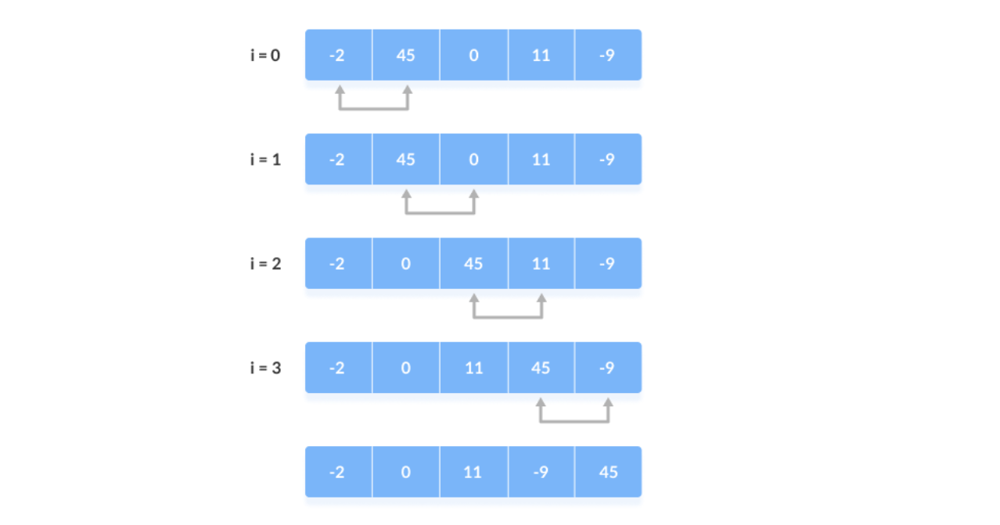
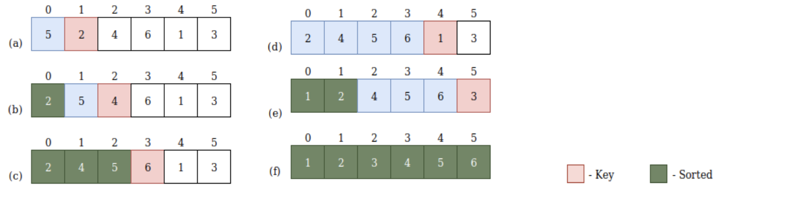
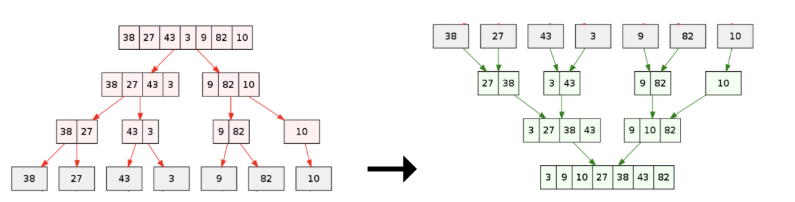
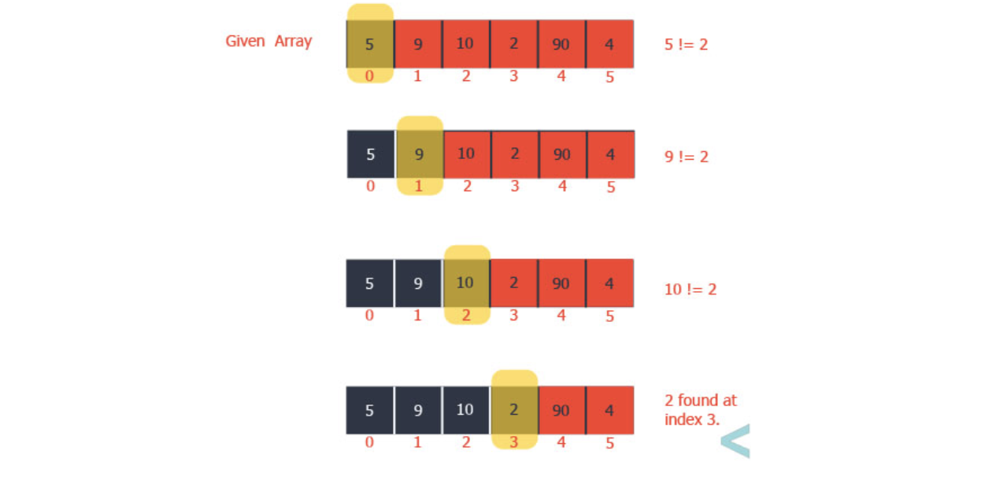

Back to Tutorials
Searching & Sorting
When dealing with large quantities of data, it is crucial to know how to search for an element in a given array, and to sort it in either ascending or descending order. In this section, I will be covering four sorting algorithms: selection sort, bubble sort, insertion sort, and merge sort and their corresponding time complexities. Additionally, the searching algorithms: binary search and sequential search will be discussed.
Sorting Algorithms
Selection Sort
Selection sort is a sorting algorithm that can be used to sort a set of elements. Partitions are made within the given array,
containing the sorted and unsorted elements. These partitions will be referred to as subarrays, with the understanding that 2 new arrays are NOT created
and that they’re merely subsections within the given array. After every iteration, the sorted subarray increases in size by 1, while the unsorted subarray
decreases in size by 1. In order to sort in ascending order, selection sort repeatedly searches through the unsorted part of the data set to find the smallest
value and then swaps it with the first element of the unsorted part. That smallest value is now sorted. This continues until there are no more unsorted elements.
The code for using selection sort is as follows:
public void selectionSort(int array[]) {
//moves boundary of unsorted subarray by 1
for (int i = 0; i < array.length-1; i++) {
// Find the minimum element in unsorted
array
int minIdx = i;
for (int j = i+1; j < arr.length; j++)
if (array[j] < array[minIdx])
minIdx = j;
// Swap the found minimum element with the first element
int temp = array[minIdx];
array[minIdx] = array[i];
array[i] = temp;
}
}
One analogy to understand selection sort may be through cards. It is often natural for us to sort the cards in our hands in ascending order when playing games such as president or poker. The following video demonstrates how selection sort would work using cards.
Time complexity estimates how an algorithm performs regardless of the kind of machine it runs on. You can get the time complexity
by “counting” the number of operations performed by your code. This time complexity is defined as a function
of the input size using Big-O notation. indicates the size of the input, while O is the worst-case scenario growth rate function.
For selection sort, in both the worst-case and best-case scenarios, you have to iterate over every element in the given array, as there is no way of knowing
whether an array is sorted or not without traversing every element. If n is the length of the array, you would have to perform n sorts in the worst-case
scenario, as all elements would be out of place. This means that the worst-case runtime would be O(n²). In the best-case scenario, although you do still have
to traverse every element of the array, no swaps would have to be performed because all elements would already be sorted. This means that the best-case runtime
would be Ω(n²).
Bubble Sort
Bubble sort is one of the most simplest sorting algorithms. It works by considering adjacent elements in pairs and compares the two values.
For sorting a list of elements in ascending order, if the second value is smaller, it will swap sports. To sort in descending order, if the second value is greater,
it will swap spots. This process will repeat no pairs can be swapped. The following diagram will illustrate the steps to sort the given array in ascending order:

As you can see, the array above is not in order. Using the bubble sort algorithm, it will continue to loop until no more swaps can be made. The code for using bubble sort is as follows:
public void bubbleSort(int array[]){
int n = array.length;
for (int i = 0; i < n-1; i++){
for (int j = 0; j < n-i-1; j++){
if (array[j] > array[j+1]){
// swap array[j+1] and array[i]
int temp = array[j];
array[j] = array[j+1];
array[j+1] = temp;
}
}
}
}
Insertion Sort
If you think of the first element in the array arr[0] as being sorted with respect to itself, the array can now be thought of as
consisting of two parts: a sorted list followed by an unsorted list. The idea of the insertion sort is to move elements from the unsorted list to the sort list
one at a time; as each item is moved, it is inserted into its correct position in the sorted list. In order to place the item, a few elements may need to be moved
to the right to create a slot for that element. Here is a demonstration of six elements being sorted insertion sort.

The code for insertion sort is as follows:
public void insertionSort(int arr[]) {
int n = arr.length;
for (int i = 1; i < n; ++i) {
int key = arr[i];
int j = i - 1;
// Move elements of arr[0..i-1], that are greater than key, to one position ahead of their current position
while (j >= 0 && arr[j] > key) {
arr[j + 1] = arr[j];
j = j - 1;
}
arr[j + 1] = key;
}
}
Merge Sort
The merge sort uses a divide and conquer algorithm that is much more efficient than some of the other algorithms. In merge sort, in
an unsorted list of n elements, the recursive calls break the list into n sublists each of a length of 1. Recursively, each adjacent pair of lists are
recursively merged. There are then approximately n/2 lists of length 2, and it continues until there is only one list of length n. One of the major disadvantages
of merge sort is that it needs a temporary array that is as large as the original array to be sorted, which could be a problem if space was a factor. As well,
since merge sort is not affected by the initial ordering of the elements, best, worst, and average cases would have similar run times. The following diagram illustrates the merge sort:

The code for merge sort is as follows:
public static void mergeSort(ArrayList
int middle;
if (low < high){
middle = (low + high) / 2;
mergeSort(intList, low, middle);
mergeSort(intList, middle+1, high);
merge(intList, low, middle, high);
}
}
public static void merge(ArrayList
int lowPointer, highPointer, correctLoc;
ArrayList
// copy the original ArrayList to a separate, temporary ArrayList
for (int i = 0; i < intList.size(); i++){
tempList.add(intList.get(i));
}
// set pointer positions
lowPointer = low;
highPointer = middle + 1;
correctLoc = low;
// copy the lowest element from each
half IN ORDER
while (lowPointer <= middle && highPointer <= high){
if (tempList.get(lowPointer) <= tempList.get(highPointer)){
intList.set(correctLoc, tempList.get(lowPointer));
correctLoc++;
lowPointer++;
} else {
intList.set(correctLoc, tempList.get(highPointer));
correctLoc++;
highPointer++;
}
}
// copy remaining elements from first half (if any)
while (lowPointer <= middle){
intList.set(correctLoc, tempList.get(lowPointer));
correctLoc++;
highPointer++;
}
}
Searching Algorithms
Sequential search
There can be many situations where it is required to find for a key in a list of n elements. A sequential search would start at the
first element and compare the key to each element in turn until the key is found or there are no more elements left to examine in the list. If the list is sorted,
(in ascending order), you would stop searching as soon as the key is less than the current list element. The diagram below illustrates the sorting process in an
array of 6 elements for the key 2.

The code for using sequential search is as follows:
public static int sequentialSearch(int[] array, int key) {
for(int i=0;i
if(array[i] == key){
return i;
}
}
return -1;
}
Binary Search
Binary search is an efficient algorithm for finding an item if the elements are in a sorted array. Binary search is a divide and conquer
search algorithm. It works by repeatedly dividing in half the portion of the list that could contain the item, until you've narrowed down the possible locations
to just one. If the key is not in the array, it will return -1. The diagram below demonstrates visually how binary sort works when searching for the number 5 in the
given array.
a[0] a[1] a[2] a[3] a[4]
a[5] a[6] a[7] a[8]
1 4 5
7 9 12 15 20 21
First pass: low is 0, high is 8 mid = (0+8)/2 = 4 Check a[4]
Second pass: low is 0, high is 3 mid = (0+3)/2 = 1 Check a[1]
Third pass: low is 2, high is 3 mid = (2+3)/2 = 2 Check a[2] Yes!!
The code for using binary search iteratively is the following:
public int BinarySearch(int[] array,int key) {
int midPosition = 0;
int lowPosition = 0;
int highPositon = array.length-1;
while(lowPosition <= highPosition){
midPosition =(highPosition+lowPosition)/2;
if(array[midPosition]
lowPosition = midPosition + 1;
} else if(inputArray[midPosition] > key){
array = midPosition - 1;
} else{
return midPosition;
}
}
return -1;
}
Hopefully now you are aware of the different searching and sorting algorithms which will be extremely helpful with future coding assignments!
Back to Tutorials